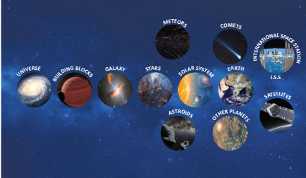

1. Who proposed the heliocentric model of the universe question mark
Bracket OPEN a bracket closed Tycho Brahe Bracket OPEN b bracket closed Nicolaus Copernicus Bracket OPEN c bracket closed Ptolemy Bracket OPEN d bracket closed Archimedes
2. Which of the following is not a part of outer solar system question mark
Bracket OPEN a bracket closed Mercury Bracket OPEN b bracket closed Saturn Bracket OPEN c bracket closed Uranus Bracket OPEN d bracket closed Neptune
3. Ceres is a dash
Bracket OPEN a bracket closed Meteor Bracket OPEN b bracket closed Star Bracket OPEN c bracket closed Planet Bracket OPEN d bracket closed Astroid
4. The period of revolution of planet A around the Sun is 8 times that of planet B. How many times is the distance of planet A as great as that of planet B question mark
Bracket OPEN a bracket closed 4 Bracket OPEN b bracket closed 5 Bracket OPEN c bracket closed 2 Bracket OPEN d bracket closed 3
5. The Big Bang occurred dash years ago.
Bracket OPEN a bracket closed 13.7 billion Bracket OPEN b bracket closed 15 million Bracket OPEN c bracket closed 15 billion Bracket OPEN d bracket closed 20 million
1. The speed of Sun in km/s is dash.
2. The rotational period of the Sun near its poles is dash.
3. India’s first satellite is dash.
4. The third law of Kepler is also known as the Law of dash.
5. The number of planets in our Solar System is dash.
1. ISS is a proof for international cooperation.
2. Halley’s comet appears after nearly 67 hours.
3. Satellites nearer to the Earth should have lesser orbital velocity.
4. Mars is called the red planet.
1. What is solar system question mark
2. Define orbital velocity.
3. Define time period of a satellite.
4. What is a satellite question mark What are the two types of satellites question mark
5. Write a note on the inner planets.
6. Write about comets.
7. State Kepler’s laws.
8. What factors have made life on Earth possible question mark
1. Give an account of all the planets in the solar system.
2. Discuss the benefits of ISS.
3. Write a note on orbital velocity.
1. Why do some stars appear blue and some red question mark
2. How is a satellite maintained in nearly circular orbit question mark
3. Why are some satellites called geostationary question mark
4. A man weighing 60 kg in the Earth will weigh 1680 kg in the Sun. Why question mark
1. Calculate the speed with which a satellite moves if it is at a height of 36,000 km from the Earth’s surface and has an orbital period of 24 hr Bracket OPEN Take R = 6370 k m bracket closed [Hint: Convert hr into seconds before doing calculation]
2. At an orbital height of 400 km, find the orbital period of the satellite.
1. Big Bang - By Simon Singh.
2. What are the stars question mark - By G. Srinivas.
3. An introduction to Astronomy - By Baidyanath Basu.
https://www.space.com/52-the-expanding
universe-from-the-big-bang-to-today.html
https://phys.org/news/2016-06-star-black-hole.html
Universe image was given below

ICT CORNER Building Blocks of Universe
Steps
Type the given URL to reach interactive universe and allow the browser to play “JAVA Script”, if asked.
Click and drag the “Scale Pointer” present in the right side of the page or scroll the mouse to zoom into the universe.
Click and drag the mouse pointer to North-South Bracket OPEN up-down bracket closed axis to observe the fabricating structure of the galaxy.
Zoom in on to extreme close up to view the solar system and to view the name of the objects present in the galaxy
Interactive Universe’s
URL: http://stars.chromeexperiments.com/ or Scan the QR Code.